Alla Olevat
He ovat maailmaa vanhempia. He ovat pimeyden, kaaoksen ja turmeluksen ikiaikaisia olentoja Alkuvoimat.
Kun valo ensi kertaa täytti tyhjyyden, he kyyhöttivät varjoissa. Kun aine tiivistyi, he olivat siellä jäytämässä sen reunoja. Kun Ensimmäiset Luojat ajattelivat ”minä olen minä” ja antoivat itselleen nimet, Pimeydessä Asuvat tavoittelivat heidän tuhoaan. He kuiskivat valheita ja lietsoivat itserakkautta. He yllyttivät Luojia sotimaan keskenään. Hävittämään luomuksensa. Antamaan kaaoksen vallita.
Mutta Ensimmäiset Luojat näkivät valheet sellaisina kuin ne olivat. He näkivät vaaran, jonka Pahuuksista Vanhimmat muodostivat. Mutta he näkivät myös, mihin sellaista petosta voisi käyttää.
Niinpä Luojat virittivät ansan. He kokoontuivat yhteen takomaan itse maailman: aineen ja energian, maan ja meren ja taivaan, elämän ja kuoleman.
He panivat liikkeelle järjestelmän, joka oli niin valtava ja monimutkainen ja ihmeellinen, että Kuiskaajat eivät voineet olla kadehtimatta sitä, eivät voineet olla yrittämättä tuhota sitä.
Kun Kauheat ryhtyivät tuhoamaan maailmaa, Ensimmäiset Luojat laukaisivat ansansa.
He taittoivat maailman Vain Vihaa Tuntevien Olentojen ympärille, sulkivat heidät kallion ja kiven sisään, sitoivat heidät itse maahan. Maailmasta – tästä maailmasta, josta tulisi meidän maailmamme – tuli heidän siteensä ja vankilansa.
Ja näin kahlittuina heistä tuli Alla Olevat.
Mullistuksen aika
Mikään vankila ei ole täydellinen. Aikakausien hitaasti vaihtuessa siteet heikkenivät. Alla Olevat kuiskivat jälleen, ja kuiskaukset löysivät korvat.
Kiven Herrat (Stone Lords, Kiven Herrat) saivat omakohtaisesti kokea, millaisen kaaoksen nuo kuiskaukset saattoivat päästää valloilleen. He löysivät maailmanvankilan halkeamat ja asettivat niiden päälle suuria sinettejä. Hetken aikaa kuiskaukset vaikenivat.
Mutta Vihreät Herrat (Green Lords, Vihreät Herrat) muistivat nuo kuiskaukset ja sen, mitä ne lupasivat, ja kutsuivat Alla Olevia murskaamaan petolliset faet (Fae, Fae). Vihreät Herrat lyötiin lopulta, mutta todellinen vahinko oli jo tehty: siteet olivat heikentyneet. Alla Olevien kuiskaukset olivat palanneet, ja niistä oli tullut laulu.
Kiven Herrojen omat palvelijat kuulivat tuon laulun. Heidän keskuuteensa nousi velhoja, jotka keräsivät seuraajia ja sitten kultteja. Salassa he punoivat juoniaan ja levittivät valheitaan. Kun aika oli kypsä, velhot murtivat sinetit ja saattoivat alkuun Mullistuksen ajan.
Kiven Herrojen kaupungit vajosivat. Heidän palvelijansa kääntyivät joukoittain heitä vastaan. Pohjoisessa nousi synkkä ja kauhea ulvonta, ja Huurteen Herrat (Rime Lords, Huurteen Herrat) uhrasivat itsensä pysäyttääkseen sen. Kauhujen aalto kaivautui esiin Tasangoilta (The Flats, Tasangot) ja kaatoi viimeiset Myrskyn Herrat (Tempest Lords, Myrskyn Herrat). Alla Olevat lietsoivat Ahjon Herrojen (Forge Lords, Ahjon Herrat) kateutta ja pelkoja ja käänsivät heidät toisiaan vastaan.
Tekijöiden aika oli ohi.
Nykyinen aikakausi
Tekijöiden tuhon jälkimainingeissa Kumpujen rakentajien (Barrow Builders, Kumpujen rakentajat) velhokuninkaiksi pyrkivät nousivat hallitsemaan Maailman Äärtä (World's End). Sukupolvien ajan seutu – ja ehkä laajempi maailmakin – tunsi vain kauhua ja kärsimystä ja sotaa.
Ja silti: Alla Olevien voima hiipui. Jo vuosisatojen ajan he ovat maanneet maan uumenissa enimmäkseen hiljaa. Mikä toi noille synkille ajoille lopun? Sen päätätte sinä ja pöytäsi, mutta ehkä…
- jumalat itse puuttuivat asiaan;
- kuolevaiset sankarit loivat suuren sitomisen, jonka voimana oli suuri uhraus;
- urheat ja epätoivoiset nousivat kautta maan, kaatoivat velhoja ja karkottivat kauhuja yksi kerrallaan;
- maailma alkoi parantaa itseään ja uudistaa siteitään;
- Alla Olevat – tuhosta ja surusta kylläisinä – yksinkertaisesti väsyivät ja vetäytyivät;
- jokin edellisten yhdistelmä; tai
- jotain aivan muuta.
Mikä Alla Olevat sitten saikin perääntymään, heidän vetäytymisensä jäi vajaaksi. Jotkin paikat ovat yhä heidän vaikutuksensa koskettamia, jotkin olennot tahrattuja sydäntä myöten.
Mahtiesineitä on yhä olemassa, ja ne turmelevat pahaa-aavistamattomia, ja jotkut näistä – kuten muinaiset velhot – tanssivat pimeässä painajaismaisen sävelmän tahtiin.
Viime aikoina, noin viimeisen sukupolven aikana, Maailman Äären eri kolkkia ovat ravistelleet järistykset. Pinnistelevätkö syvyyksien vangit jälleen kahleitaan vastaan?
Koukut
- Paikallinen uhraa tietämättään turmeltuneelle hengelle ja saa voimaa; henki pyytää (ja tarjoaa) lisää
- Pulma vaivaa pelaajahahmoja; mustan menhirin mustan menhirin neuvon kysyminen voisi auttaa
- Crinwinit Crinwin ovat alkaneet palvoa turmeltuneessa kohteessa Turmeltuneet kohteet ja turmeltuvat itsekin
- Muinaistutkija Lygos ja etelä on salaa Alla Olevan kahlittu ja pyrkii päästämään valloilleen mahtavamman palvelijan
- Kohta Stonetopin peltojen keskellä pilaantuu ja märkii kuin tulehtunut paise, hylätyn artefaktin turmelemana
Tarusto
Kaikki tietävät:
- Pahat olennot on sidottu syvälle maan sisään
- Joskus ne lähettävät demoneja riehumaan maailmaan
- Syvä vesi on todennäköisin paikka, josta sellaiset kauhut nousevat
- Suonreuna (Marshedge, Suonreuna) pitää sellaiset kauhut loitolla polttamalla jatkuvasti bendisjuurta
Jotkut saattavat tietää:
- Mullistuksen ajasta ja siitä, mitä sen jälkeen tapahtui
- Tietyn Alla Olevan nimen, arvonimet, ilmenemismuodot, voimat tai kätyrit
- Miten heidän voimansa turmelee paikkoja, artefakteja, ihmisiä, petoja ja henkiä
- Miten heidän tahraansa, voimaansa tai kätyreitään sidotaan, puhdistetaan tai torjutaan
- Että saastaiset olennot kavahtavat bendisjuuren savua, mutta todella hurjat tai tahtovoimaiset voivat voittaa sen
- Että pronssi on Alla Olevien turmio ja että orikalkki Ahjon Herrat tehoaa vielä paremmin
- Turmeltuneiden olentojen ja emanaatioiden eron
Harvat tietävät:
- Heidän todellisen luontonsa
- Miten heidät vangittiin
- Minkään keinon tuhota sellainen todella
Kysymyksiä
- Missä lapsuuden pelottavassa tarinassa esiintyivät Alla Olevat?
- Minkä pikku asian kyläläiset tekevät torjuakseen heidän huomionsa tai vaikutuksensa?
- Milloin tunsit heidän läsnäolonsa ensimmäisen kerran? Mitä tapahtui? Mikä siinä kokemuksessa vainoaa sinua yhä tänä päivänä?
- Minkä lähiseudun paikan sanotaan olevan heidän vaikutuksensa tahraama? Mikä merkki kertoo sen?
- Miten paikalliset puhuvat heistä? Kuiskaten? Synkissä saarnoissa? Jotain siltä väliltä?
- Milloin kylä viimeksi joutui tekemisiin demonin, kultin tai velhon kanssa?
Demonit
Todellisuudessa demoneja ei ole olemassa. Tai pikemminkin ”demoni” ei ole mielekäs käsite. Sillä tarkoitetaan usein Alla Olevien emanaatioita Kurja tai heidän turmelemiaan olentoja turmeltuneelta olennolta. Mutta ihmiset saattavat käyttää sanaa mistä tahansa yliluonnollisesta kauhusta. Jos se on vihamielinen, maaginen ja sillä on (tai se voi ottaa) fyysinen muoto, joku kutsuu sitä todennäköisesti demoniksi.
Teemat
Kun tuot peliin Alla Olevan – tai todennäköisemmin kun tuot peliin siihen liittyvän kohteen, artefaktin tai vaaran – valitse tai heitä 2 tai useampia virikkeitä tämän sivun teemataulukosta. Yhdistä tulokset ja katso, mihin ne vievät. Vaihtoehtoisesti voit valita jonkin vakiintuneista Alla Olevista Sillä Meitä On Monta ja käyttää sen teemoja.
| 1 | Pimeys/kylmyys/epätoivo: valon, lämmön ja toivon nieleminen (obsidiaani, kuura) |
|---|---|
| 2 | Kieltäminen/häpeä/salaisuudet/petos: totuuden, anteeksiannon ja luottamuksen torjuminen (helmet, silmät, naamiot) |
| 3 | Harhaluulo/houre/painajainen: itsensä kadottaminen, mielten ja tahtojen murtuminen (elohopea, peilit, heijastukset) |
| 4 | Nälkä/tarve/riippuvuus: puute ja epätoivo, ulvova kaipuu (tuuli, torahampaat, liha) |
| 5 | Julmuus/kidutus/väkivalta/raivo: halu satuttaa, tappaa ja hallita (punakide, vuodatettu veri) |
| 6 | Tuho/kaaos/raunio/tietämättömyys: sortuva torni; ahdistus ja menetys (tuli, tuhka, pöly) |
| 7 | Haavat/vammat/kipu: lihan repeäminen, luun murtuminen (veri, luut, kynnet, terät) |
| 8 | Turmelus/tauti/rappio: voiman, eheyden ja terveyden menetys (syöpäläiset, myrkky, happo, lika) |
| 9 | Ahmatti/ahneus/kateus: tarve saada lisää, aina vain lisää (suut, käärmeet, jalokivet, parvet) |
| 10 | Ahtaus/tukehtuminen/paine/ hyväksikäyttö: avuttomuuden musertava paino (kahleet, vesi, maa) |
| 11 | Mutaatio/muodonmuutos/kiehuva liha: ruumiin muovautuvuus (vaha, savi, lima, lonkerot) |
| 12 | Kuolema/epäkuolema/menetys/suru: kaiken loppu, kieltäytyminen päästämästä irti (kallot, haudat, rovio) |
Alla Olevan luominen
Kun Alla Olevaa on tarpeen kuvata tarkemmin, yhdistä sen teemat (edellinen sivu) kahteen tai useampaan ilmenemismuotoon ja ammenna niistä kuvauksiisi. Valitse tai heitä vaisto, tai keksi oma.
Jos Alla Olevasta tulee pelaajahahmoille jatkuva ongelmien lähde (ja todennäköisesti tulee), anna sille nimi ja yksi tai useampia mahtipontisia arvonimiä. Kirjoita se uhaksi (maaginen olento).
| 1 | Kitiini/kuori/kilpi/panssari |
|---|---|
| 2 | Vanhus/akka/kumarainen vanha mies |
| 3 | Tuli/valo/usva/pilvi/pyörre/tyhjyys |
| 4 | Sarvet/siivet/häntä (hännät)/kaviot |
| 5 | Eloton herätetty eloon/esineiden yhteensulautuma |
| 6 | Monijäseninen/monipäinen/ monisilmäinen/moniruumiinen |
| 7 | Kosteus/lonkerot/lima/lieju |
| 8 | Saalistaja/soturi/sotaherra/ hallitsija |
| 9 | Suomut/jänteet/notkeus |
| 10 | Kallot/luut/ruumiit/kuolema |
| 11 | Suunnattomuus/äärettömyys |
| 12 | Nuorukainen/lapsi/vauva |
Muista, että biologian, fysiikan tai todellisuuden rajat eivät sido Alla Olevia. Tee niiden ilmenemismuodoista mahdottomia ja outoja, kuumehoureen ja huumenäyn kaltaisia.
| 1 | Lietsoa riitaa, sekasortoa, epäluottamusta |
|---|---|
| 2 | Jäytää toivoa/uskoa/kunniaa/ omanarvontuntoa |
| 3 | Kätkeä/haudata/tukahduttaa asioita tai ajatuksia |
| 4 | Riistää muilta se, mitä he tarvitsevat |
| 5 | Aiheuttaa vahinkoa julmasti ja tarpeettomasti |
| 6 | Häpäistä/silpoa/pilata arvokkaita asioita |
| 7 | Järkyttää/kauhistuttaa/kammottaa muita |
| 8 | Ahmia ja kuluttaa holtittomasti |
| 9 | Saastuttaa ja turmella kauneutta/ voimaa/arvokkuutta |
| 10 | Taistella ja satuttaa ja tappaa ja raivota ja satuttaa vielä lisää |
| 11 | Hallita, rangaista ja murskata |
| 12 | Yksinkertaisesti tuhota, ei enempää eikä vähempää |
Muokkaa valitsemaasi vaistoa sitä mukaa, kun ymmärryksesi juuri tästä Alla Olevasta kasvaa.
Nimet ja arvonimet
Alla Olevien todellisia nimiä ihmisten on lähes mahdotonta käsittää, saati lausua. Nimet, joita heille käytämme, ovat karkeita likiarvoja. Silti ne toimivat tarpeeksi hyvin heidän voimansa kutsumiseen.
Nimetäksesi Alla Olevan kokeile jotain näistä:
- Valitse epämiellyttävä sana tai käsite ja käännä se kielelle, jota sinä ja pelaajasi ette osaa (”nälkä” >> tšekiksi ”Hlad”)
- Ota yliluonnollisen olennon nimi populaarikulttuurista, kirjallisuudesta tai toisesta pelistä ja muuta sitä vähän tai paljon (”Dagon” >> ”Daagon”).
- Yhdistä lyhyitä, epätodennäköisiä äänteitä, usein heittomerkein, jotka kuvaavat lyhyitä taukoja tai painotusta (”Hec'tumel”)
- Jokin edellisten yhdistelmä
Anna sitten kullekin Alla Olevalle yksi tai useampia mieleenpainuvia arvonimiä pitäen mielessä jo vakiintuneet teemat ja ilmenemismuodot. Hae innoitusta alla olevista luetteloista ja muuntele sanamuotoja tarpeen mukaan (esim. ”märkiä” voi muuttua Märkiväksi, Märkimiseksi tai Märkijäksi).
Määre/suhdesana: se, eräs, joka, mikä, jonka, -n, -ssa, -lla, läpi, kanssa, ilman, oi Verbi: hieroa kauppaa, vuotaa verta, murtaa, tuoda, polttaa, kaivautua, haudata, teurastaa, jäytää, kuluttaa, ryömiä, murskata, tanssia, pettää, kieltää, himoita, ryöstää, tuhota, syödä, lopettaa, nielaista, ruokkia, märkiä, nylkeä, jäädyttää, kummitella, kätkeä, hamstrata, ulvoa, nälkiintyä, pitää, tietää, puuttua, nauraa, valehdella, sulattaa, tarjota, luvata, raivota, repiä, kuohua, mädätä, sirotella, vilistää, tihkua, muovata, särkeä, laulaa, teurastaa, nukkua, luoda nahkansa, tukahduttaa, sammuttaa, pilata, nääntyä, varastaa, pinnistää, märkiä, niellä, parveilla, kaataa, purkaa, rypeä, haluta, kutoa, kuiskata, kuihtua jne.
Adjektiivi: kaikennielevä, kauhea, musta, mustin, murtunut, purppurainen, julma, synkkä, kuollut, epätoivoinen, vanhin, väärä, neljäkymmentä, loputon, ensimmäinen, unohdettu, hylätty, harmaa, suuri, kätketty, sata, nälkäinen, leppymätön, väistämätön, kadonnut, hullu, moni, kalpea, kelmeä, punainen, ruosteinen, salainen, kauhea, tuhat, armoton, eloton, valtava, vihainen, keltainen Rooli: lapsi, tytär, isä, perijä, airut, kuningas, rouva, viimeinen, herra, mestari, valtiatar, äiti, prinssi, prinsessa, varas, kuningatar, poika, tyranni jne.
Esimerkkinimiä
Käytä näitä lähtökohtana omien Alla Olevien kehittelyyn.
- Ha'z-Ra'iel, Surun Airut, Tuhannen Toivon Varas
- Na'ieraak, Valehtelija Varjoissa, Hän Joka Jäädyttää Sydämen
- Unhlef 'k, Syövä Painajainen, Hampainen Uni
- Ta'l Themyin, Palava Lapsi, Julma Vauva, Raivon Prinssi
- H'nisat, Märkiminen, Haava Joka Märkii
- Hakog, Valheellinen Tuuli ja Petoksen Viimeinen Kuiskaus
- Lalacheewa, Joka Aterioi Tuhkaa ja Murhetta
Sillä Meitä On Monta
Alla Olevia on legioona, ja niiden voima ja taipumukset, toimeliaisuus ja kunnianhimo vaihtelevat suuresti. Joistakin kuiskitaan laajalti eri kansojen keskuudessa. Toiset ovat paikallisia kauhuja, jotka jäytävät yhtä ainoaa rihmaa siitä maailmasta, joka niitä sitoo.
Seuraavassa on puolisen tusinaa Alla Olevaa, jotka saattavat olla tai olla olematta olemassa pelissäsi.

Daagon, Joka Odottaa Syvissä Vesissä- Lähetä kätyreitä tekemään tahtonsa
- Tarjoa valtaa, rikkautta, kuolemattomuutta
- Vaadi uhria
- Väännä palvelijansa märiksi ja kiemurteleviksi olennoiksi
Teemat ahmatti/ahneus/kateus, kiehuva liha/mutaatio/muodonmuutos Vaisto ottaa pinnalta, olla koskaan päästämättä irti
Ne, jotka ovat tarpeeksi hölmöjä uhmatakseen syvää vettä, kertovat sinulle: jokin vaanii syvyydessä. Jokin kärsivällinen, jokin valtava, pohjaton kita, joka aukeaa vatsaan, jota ei voi koskaan täyttää. Sen lukemattomat kiemurtelevat palvelijat uhmaavat kuivaa ja tukahduttavaa maata kerätäkseen lihaa, kerätäkseen luuta. Varastaakseen kaiken rikkauden ja kauneuden. Ottaakseen toivoa ja lupausta täynnä olevat elämät ja syöttääkseen ne ammottaville pimeille, märille leuoille.
Ks. myös: Mustavesijärvi (Blackwater Lake, Mustavesijärvi), Gordinin Kaivoksen salaisuudet ja Daagonin Sormus.
El'rash-Orra, Kehrien Herra, Monisilmä
- Vakoile jonkun tekoja, haluja, häpeitä
- Anna tietoa (haluttua tai ei) unien/näkyjen kautta
- Väännä jonkun aisteja (todellisuudesta, itsestään)
Teemat kieltäminen/häpeä/salaisuudet/petos, harhaluulo/houre/painajainen Vaisto paljastaa rumuuden kaikki muodot
Jos huomaat olevasi yksin ja silti vakuuttunut siitä, että sinua tarkkaillaan, on parasta olla kääntymättä katsomaan. Sillä jos käännyt, saatat nähdä suuren, ruumiittoman silmän. Tai pahempaa: kasvottoman valtiaan hopeaisella valtaistuimella hopeista kehrää heristäen. Ja jos se nousee seisomaan ja antaa kaapunsa avautua, se on kuin yötaivas lukemattomine tuikkivine silmineen, jotka näkevät kaikki häpeät ja epäilykset, kaikki katumukset, kaikki syyllisyydet ja salaiset pelot, jotka koskaan ovat olleet tai jotka vielä saattavat olla. Katso! Se näyttää ne kaikki sinulle! Mielellään se näyttää! Halusitpa nähdä tai et.
Ks. myös: Luomettoman Kehrän Sauva.

Hec'tumel, Kalpea Käärme! Pimeydessä Luikertelija! Kuolema On Sen Silmät!- Aisti voimakkaita kaipuita/tunteita
- Tarjoa palveluksia, salaisuuksia tai valtaa
- Väännä kauppa edukseen
Teemat pimeys/kylmyys/epätoivo, epäkuolema/ kuolema/menetys/suru Vaisto tukahduttaa elämä, toivo ja valo
Kalpea se on, kuollut se on, pitkä matelijamainen olento, jolla on kallot silmien paikalla. Se luikertelee synkissä, luiden peittämissä luolissa. Luolissa, joiden seinät tihkuvat kyyneliä ja menetettyjä toiveita. Se nosti ensimmäiset velhot, antoi heille vallan, jota he himoitsivat. Se pyysi vain pieniä asioita, harmittomia asioita, asioita, joita he eivät koskaan kaipaisi. Ja se riemuitsi, kyllääh se riemuitsi niin, kun sen antamat lahjat syöksivät saajansa turmioon. Syöksivät heidät turmioon, ja kaiken heidän ympärillään, kyllääh.
Ks. myös: Hec'tumelin Koodeksi.
Hlad, Nielijä, Ikuinen Kita
Vaisto kuluttaa todellisuus
- Kuluta voimaa, eheyttä, elämää
Teemat nälkä/tarve/riippuvuus, tuho/kaaos/raunio/tietämättömyys
• Vedä puoleensa heikkotahtoisia
• Kasva voimassa ja mahdissa
Ikuinen Kita on reikä todellisuudessa, tuhon ulvova pyörre. Sen laulun kuuleminen on tietää, että kaikki päättyy, ja toivoa unohduksen lepoa. Sen katsominen on nähdä tyhjyys, tietää kamppailun turhuus. Sen koskettaminen on tuntea kaiken voiman ja rohkeuden pettävän ja joutua kauhean valinnan eteen. Alistutko sen leppymättömälle nälälle? Vai tuletko yhdeksi sen lukemattomista suista?
Ks. myös: Hladin Nälkäinen Kita.
L'bin'bozia, Lihakynttilä, Vahakallo, Kiehuva Hauta
Vaisto kauhistuttaa ja musertaa
- Piinaa painajaisilla
Teemat kiehuva liha/mutaatio/muodonmuutos, ahtaus/tukehtuminen/ paine/hyväksikäyttö
• Käännä jonkun liha häntä vastaan
• Tarjoa helpotusta kauheaan hintaan
Unissasi se löytää sinut. Se tarttuu sinuun käsien joukolla, tiheänä kuin makunystyrät kauhealla kielellä. Kädet raahaavat sinut alas veden läpi, mullan ja kiven läpi, mustasta basaltista ja sälöillä olevasta luusta tehtyyn hautaan.
Ne vääntävät pääsi vastentahtoisesti katsomaan isäntääsi: ruumista, joka kuplii ja rakkuloi valkoisen liekin seppelöimänä ja virnuilee kiemurtelevista raajoista tehdyltä tuolilta toivottaen sinut tervetulleeksi ikuiseen kurjaan kotiisi.
Y'aaw'kara, Ulvova Tuuli, Lihan Nylkijä
- Aisti tai voimista nälkää/pelkoa/ vihaa/kipua
- Tarjoa julmuuden voimaa
- Langeta jonkun päälle Ulvova Kirous
Teemat nälkä/tarve/riippuvuus, julmuus/ kidutus/väkivalta/raivo, haavat/ vammat/kipu Vaisto levittää kipua ja kurjuutta
Kaukaisen pohjoisen kansalle Y'aaw'karan ääni on yhtä alituinen kuin tuuli. Sillä hän on vihainen sana. Hän on jäytävä talvinen nälkä. Hän on unelma koston hetkestä niille, jotka ovat tehneet sinulle vääryyttä, tai niille, joilla yksinkertaisesti on enemmän. Tervehdi häntä, niin näet nääntyvän suden nääntyvän miehen ruumiissa, vuotamassa verta tusinasta haavasta. Kuuntele häntä, niin kuulet hänen vinkuvan hengityksensä, joka ulvoo kuin lumimyrsky. Kutsu hänet sisään, niin et ole enää koskaan saalis.
Ks. myös: Muurisola (Barrier Pass, Muurisola), Valkohammasvuoret (Whitefang Mountains, Valkohammasvuoret).
Turmeltuneet kohteet
Nämä ovat paikkoja, joissa Alla Olevien vaikutus on saanut otteen ja joissa heidän voimansa tihkuu maailmaan. Jos itse kohdetta ei ole vielä vakiinnutettu, yhdistä maasto, jossa se sijaitsee, johonkin piirteeseen.
| 1 | Mikään ei erota sitä paitsi maasto itse |
|---|---|
| 2-3 | Erottuva (epä)luonnollinen maamerkki (iso puu, luonnon kivikaari, lähde tms.) |
| 4 | Suuren tuhon merkkejä (tuhkakenttiä, railo, laavavirta, mutavyöry tms.) |
| 5 | Pedon pesä/kolo/luola |
| 6 | Paikallisten tai heidän esi-isiensä jättämä hauta/hautakumpu/muistomerkki |
| 7 | Paikallisten tai heidän esi-isiensä vanha asumus/kokoontumispaikka |
| 8 | Tekijöiden (The Makers, Tekijät) raunio tai heidän läsnäolonsa yhä säilynyt merkki |
| 9-12 | Syvä vesi, jonka hämärät syvyydet kätkevät kohteen (heitä ) |
Kun kohde on vakiinnutettu, valitse tai heitä sen teemat selvittääksesi, millainen Alla Oleva paikkaa turmelee (tai jos tiedät sen olevan jo vakiintunut Alla Oleva, sovella sen teemoja kohteeseen).
Valitse tai heitä turmeluksen syy ja vakavuus. Kansoita paikka Alla Oleviin liittyvillä artefakteilla Punakide ja vaaroilla vaaroilla sekä ympäröivälle seudulle sopivilla löydöillä ja vaaroilla.
| 1 | Eroosio/maan liikkeet/ ajan leppymätön kulku |
|---|---|
| 2 | Epäonnistunut yritys käyttää ikiaikaista voimaa |
| 3-5 | Artefakti/velhon luut/ turmeltuneen pedon jäännökset tms., jätetty märkimään* |
| 6-8 | Lihan/veren/kärsimyksen uhri, tahallinen tai ei* |
| 9-10 | Manaus/avuksihuuto/ harkitsematon kutsu* |
| 11-12 | Sinetti tai side, joka piti aiemman turmeluksen kurissa ja on nyt heikentynyt* (heitä uudelleen alkuperäisen turmeluksen selvittämiseksi) |
* Päätä, oliko tämä tahallista, tai pyydä jotakuta heittämään Kohtalon noppaa (1-2:
tahallista; 3-4 harkitsematonta; 5-6 vahinko/ sivuseikka). Jos se oli tahallista tai harkitsematonta, kuka sen teki ja miksi? Jos vahinko, mitä tapahtui?
| 1-3 | Karteltu paikka: täynnä levottomuutta ja rauhattomuutta, ei varsinaisesti vaarallinen, mutta siellä on helppo ammentaa heidän voimastaan |
|---|---|
| 4-6 | Nälkäinen paikka: täynnä kuiskauksia ja näkyjä, kutsuu puoleensa epäpyhää, ansoittaa ja nielee varomattomat |
| 7-9 | Myrkyllinen paikka: täynnä luonnottomia ilmiöitä, turmelee vierailijansa |
| 10-11 | Synnyinpaikka: jossa emanaatiot hyytyvät ja ilmentyvät |
| 12 | Haava maailmassa: levittää mätää, vuotaa kauhua, pahenee |
Alemman vakavuustason vaarat voivat esiintyä myös korkeammilla tasoilla. Nälkäinen paikka on täynnä kuiskauksia ja näkyjä mutta ehkä myös levottomuutta ja rauhattomuutta.
Jos turmeltuneesta kohteesta tulee jatkuvien ongelmien lähde, kirjoita se uhaksi (MacGuffin), jonka uhkaava tuho ja synkät enteet kuvaavat sen pahenemista. Katso syiden luettelosta (edellinen sivu) ideoita siihen, mikä voisi pahentaa turmeltunutta kohdetta ja millaisia uusia vaaroja siinä voisi alkaa ilmetä.
Turmeltuneiden kohteiden puhdistaminen
Alla Olevat luopuvat nihkeästi siitä vallasta, joka heillä maailmassa on, mutta heidät voi voittaa rohkeudella, oveluudella ja tiedolla. Joillakin pelaajahahmoilla (kuten Siunatulla) on voimia tai arkaaneja, joilla he voivat sitoa tai eristää paikan pahuuden. Ilman sellaista voimaa pelaajahahmojen täytyy Tehdä Suunnitelma. Harkitse esimerkiksi seuraavia vaatimuksia:
- puuta, erityisesti vanhaa puuta;
- suurta kiven/kristallin/meripihkan/ tumman jään Huurteen Herrat kappaletta;
- syvään kaiverrettua riimukehää;
- pronssista, orikalkista Ahjon Herrat tai mustasta raudasta Alkuvoimat tehtyä piikkiä/astiaa
- faen valtakuntaa Fae;
- suljettua ja pyhitettyä hautakumpua/kiviröykkiötä/holvia/uurnaa/astiaa;
- ikuista pyhää liekkiä;
- puhtaan sielun luita, asianmukaisesti kaiverrettuina ja valmisteltuina;
- jotain edellisten yhdistelmää; tai
- jotain aivan muuta.
Pelaajahahmot seuraavat Sruth-jokea sen lähteelle. Olen päättänyt, että he ohittavat joen varrella turmeltuneen kohteen. Minulla ei ole yksityiskohtia mielessä, joten heitän piirteeksi 6 (paikallisten tai heidän esi-isiensä hauta/hautakumpu/muistomerkki). Siitä tulevat mieleen Kumpujen rakentajat (Barrow Builders, Kumpujen rakentajat).
Teemoiksi heitän 6 (tuho/kaaos/ raunio/tietämättömyys, ”tuli, tuhka”) ja 8 (turmelus/tauti/rappio, ”syöpäläiset, myrkky, happo, lika”). Syyksi heitän 2 (yritys käyttää ikiaikaista voimaa) ja vakavuudeksi 3 (karteltu paikka).
Hylkään ensimmäisen vaistoni tehdä siitä velhon haudan ja päätän sen sijaan, että se on kiviröykkiö matalalla kukkulalla joen yllä. Sisällä lepäävät erään velhokuninkaan lapsen jäännökset. Velho yritti kutsua lapsensa takaisin Viimeisen Oven takaa, mutta onnistui vain turmelemaan rinteen kammottavalla voimalla. Yhä tänä päivänä kivet ovat kosketukselle kuumia ja höyryävät sateessa ja lumessa. Siellä ei kasva mitään, ja sairaalloisen, karun maan kaistale kulkee rinnettä alas joelle, jossa siitä tulee kuplivaa, myrkyllistä mönjää.
 Punakide
Punakide
Sykkivä, lämmin ja verenjanoinen, kuin kiinteäksi jähmettynyttä julmuutta. Punakide liittyy Alla Olevista väkivaltaisimpiin ja vihantäyteisimpiin. Sitä kasvaa heidän turmelemissaan paikoissa, ja joskus sitä työntyy maasta valtavia määriä. Alla Olevien turmelemilla olennoilla saattaa olla siitä tehdyt kynnet, torahampaat tai sarvet.
Punakiteen vaikutukset ovat hienovaraisia, mutta sitä voi käyttää moneen. Esimerkiksi:
- Ne, joilla on valtaa muihin, pitävät sitä kiehtovana; uhreiksi joutuneet kauhistuttavana (monet pitävät sitä molempina)
- Se kiihdyttää malttia, lietsoo kaunaa, ajaa ihmisiä toimimaan hetken mielijohteesta
- Se imee itseensä kaiken veren, jota se koskettaa, ja lämpenee ja hehkuu kirkkaammin
- Velhot voivat muovata siitä voimakkaita talismaaneja tai käyttää sitä taikuutensa polttoaineena
- Demonien metsästäjät käyttävät sitä joskus houkutellakseen saaliinsa ansaan
Artefaktit
Erilaisia aarteita
- Karkea kivinen pienoispatsas jostain pedosta, kynnet ja torahampaat liioiteltuina ja näköjään veren tahrimina (Arvo 0)
- Ruukullinen pölyä◇ (3 käyttöä, hauras, Arvo 1 oikealle henkilölle), joka aiheuttaa repivää yskää, heikkoutta, ehkä jopa halvaantumisen
- Lyhty◇ (5 tuntia, ulottuvuus, alue, maaginen, Arvo 1) kierteisestä mustasta metallista; sen liekki luo kalpeaa valoa, joka imee värit ja viilentää ilmaa
- Punakidemöhkäle (edellinen palsta), muotoiltu irvistäväksi kalloksi (Arvo 1 oikealle henkilölle)
- ◇◇ Suuri, notkeasta vellumista tehty foliantti (lähdettä on parasta olla kysymättä), täynnä muinaismurteella kirjoitettuja horinoita, levottomuutta herättäviä kuvia ja salaperäisiä kaavioita (Arvo 2)
- Ihmisen(moinen) kallo◇, mutta kuudella silmäkuopalla ja esiin työntyvillä alatorahampailla, kaiverrettu häiritsevin kuvioin ja upotettu hopealla (Arvo 3 oikealle ostajalle)
- Kiertynyt vanha puu, jonka mahlaa nuolevat peurat eivät välitä lähestyvistä uhista; mahlasta voi jalostaa erittäin koukuttavaa huumetta
Musta menhir
Suurmetsään (Great Wood, Suurmetsä) on viime aikoina ilmestynyt joukko näitä megaliitteja. Ne ovat rosoisia basalttimöhkäleitä, pitkän pojan mittaisia, ja niihin on kaiverrettu monimutkaisia kuvioita, jotka voisivat melkein olla kirjoitusta. Maa niiden ympärillä on rikkonaista ja myllättyä. Niissä ei ole sammalta eikä jäkälää, eikä mikään verso tai köynnös koske niihin.
Kun tutkit monimutkaisia kaiverruksia ja annat mielesi vaeltaa, saat näyn tai aavistuksen nykyisestä tilanteesta.
PJ kuvailee sen. Mutta heitä ensin +WIS: 10+:lla valitse vain 1; 7-9:llä valitse 2; 6-:lla valitettavasti kaikki 3 ovat totta.
- Osa siitä, mitä saat tietää, on väärää tai harhaanjohtavaa (mutta mikä?)
- Alat nähdä painajaisia maan sisällä liikehtivistä kauhuista
- Menhir kysyy kysymyksen häpeästäsi, syyllisyydestäsi tai peloistasi – vastaa totuudenmukaisesti
 Syvä, pimeä kuilu
Syvä, pimeä kuilu
Reikä maassa, ehkä puolitoista metriä leveä ja ainakin 30 metriä syvä, ja sen pohjalla on vetinen kammio tai maanalainen järvi, jossa on Daagonin Suu.
Kun viivyt kuilun lähellä, vastaa yhteen seuraavista:
- Ketä kadehdit eniten, ja miksi?
- Mitä haluat omistaa enemmän kuin mitään muuta?
- Milloin viimeksi tunsit itsesi loukkuun jääneeksi ja avuttomaksi?
Kun heität jotain kuiluun, Daagon ahmii sen kokonaan. Kun joku putoaa kuiluun, hän on poissa ruumiineen ja sieluineen.
Kun syötät Daagonin Suulle jonkun tai jotain rakasta (kenelle tahansa, ei vain sinulle), Daagon antaa sinulle lahjan.
| 1 | Fyysinen muutos (suomut, kumimainen liha, kidukset, lonkero tms.) |
|---|---|
| 2 | Ylellisyys- tai statusesine (Arvo 2) |
| 3 | Kallisarvoinen esine (Arvo 3) |
| 4 | ”Korvaamaton” esine (Arvo 4) |
| 5 | Keino päihittää kilpailijasi tai kukistaa vihollisesi |
| 6 | Keino saavuttaa suuri valta tai pitkä ikä |
Oli lahja mikä tahansa, se saapuu pian: nukkuessasi, unissasi tai näyn, sattuman tai onnekkaan vahingon kautta.
Rautahämähäkki
Kämmenen kokoinen, reilun sentin paksuinen, reunoiltaan ruostunut, jalat taitettuina selän päälle. Kätketty nappi saa jalat ojentumaan ja paljastaa niiden teräväkärkiset päät. Joskus, kun menet hakemaan sitä, se ei ole aivan siinä, mihin sen jätit.
Hämähäkki on nälkäinen, kun löydät sen.
Kun upotat nälkäisen hämähäkin jonkun lihaan, hän menettää HP:tä muutaman sekunnin välein, kunnes se revitään irti ( vahinkoa, sotkuinen, ohittaa panssarin). Jos hämähäkki imee hänet 0 HP:hen, se kylläytyy.
Kun upotat kylläisen hämähäkin jonkun lihaan, hän ottaa 1 vahinkoa (ohittaa panssarin) eikä vanhene vuoteen. Jos hän on keski-ikäinen tai vanhempi, hän saa takaisin hieman nuoruutensa tarmoa. Sitten hämähäkki tulee nälkäiseksi.
Joka kerta, kun joku käyttää hämähäkkiä pidentääkseen elämäänsä, hänen piirteensä muuttuvat hienovaraisesti mitäänsanomattomammiksi, vahamaisemmiksi, kalpeammiksi, epämääräisemmiksi. Jos hän kuolee ylitettyään kuolevaisen elinikänsä, hänestä tulee verta janoava palannut Kuolema ja kuolemattomat.
Obsidiaaniriipus
Möykky vulkaanista lasia, mahdottoman mustaa, upotettu riipukseen ja ripustettu nahkanauhaan. Lasi imee valoa lähellä olevista lähteistä ja himmentää niitä. (Aurinko ja kuu eivät muutu, koska ne ovat kaukana, kaukana.) Hienovaraisemmin riipus imee myös ystävällisyyttä, jolloin sen lähellä olevista tulee tunteettomampia ja itsekeskeisempiä.
Kun pidät riipusta kaulassasi tai kannat sitä näkyvästi vähintään muutaman minuutin, silmäsi tottuvat ja näet selvästi kaikkialla paitsi pilkkopimeässä. Mutta lisäksi vaistosi pelikerran ajaksi muuttuu muotoon ”Tunteettomuus: piitata viis muiden tunteista, tarpeista tai hyvinvoinnista.”
Käärmemäinen käsivarsirengas
Valettu hopeasta, joka ei tunnu koskaan tummuvan, ja sen silmäkuopissa on jotain kahden pienen rubiinin näköistä. Näyttää siltä, ettei se ehkä mahdu – mutta kas, se mahtuu.
Kun pidät käärmemäistä käsivarsirengasta näkyvästi kaikkien nähtävillä, sivuhahmot pitävät sinua vastustamattomana ja muuttuvat mustasukkaisiksi ja omistushaluisiksi huomiostasi. Malttia menetetään nopeasti, ja saatat joutua Uhmaamaan Vaaraa tai Suostuttelemaan muita päästäksesi lähtemään.
Kysy jokaiselta kohtaamaltasi pelaajahahmolta, miten käsivarsirengas vaikuttaa häneen.
Kun riisut käsivarsirenkaan pidettyäsi sitä ja paisteltuasi muiden ihailussa, huomaat kaipaavasi sitä tunnetta, että sinua jumaloidaan. Heitä +CON: 10+:lla pääset siitä yli; 7-9:llä joko pane käsivarsirengas takaisin (ja pidä se) tai merkitse heikkous; 6-:lla et saa unta, ennen kuin panet käsivarsirenkaan ylle ja pidät sitä näkyvästi muiden seurassa.
Silkkinen hirttosilmukka
Pätkä hienoa nyöriä, solmittu hirttosilmukaksi niin, että siitä roikkuu vapaana metrin verran. Se on huomattavan sitkeää, mutta pronssinen terä leikkaa sen helposti poikki. Jos solmu avataan ja nyöri jätetään vartioimatta, se solmii itsensä uudelleen hirttosilmukaksi.
Kun pujotat silmukan jonkun kaulaan, se kiristyy tiukalle – tiukka ja epämukava, mutta uhri pystyy hengittämään.
Kun uhrisi valehtelee tai kieltäytyy vastaamasta kysymykseen, silmukka kiristyy ja kuristaa häntä, kunnes hän kuolee tai saa henkäistyä totuuden.
Kun sinä (tai kuka tahansa muu) yrität irrottaa tai löysätä silmukkaa, se alkaa kuristaa uhria. Jos sinä (tai he) lopetatte, se löystyy. Jos sinä (tai he) jatkatte, se murskaa nopeasti uhrin henkitorven.
Kun uhri kuolee, silmukka löystyy ja sen voi irrottaa.
 Pienet arkaanit
Pienet arkaanit
Valitse 1 tai pyydä jotakuta heittämään.
| 1 | Outo riipus |
|---|---|
| 2 | Repaleinen turkisviitta |
| 3 | Häiritsevä naamio |
| 4 | Hopeinen lasipullo |
| 5 | Vellumkäärö |
| 6 | Kuiskaava… sana? Turmiollinen Lausuma |
Suuret arkaanit
Nämä liittyvät lähes varmasti Alla Oleviin.
- Luomettoman Kehrän Sauva Luomettoman Kehrän Sauva
- Demoninnahkaviitta Demoninnahkaviitta
- Kuiskaavat Kivet Kuiskaavat Kivet
- Veressä Karkaistu Miekka Veressä Karkaistu Miekka
- Hec'tumelin Koodeksi Hec'tumelin Koodeksi
- Punainen Valtikka Punainen Valtikka
- Daagonin Sormus Daagonin Sormus
- Hladin Nälkäinen Kita Hladin Nälkäinen Kita
Vaarat
 Levottomuus ja rauhattomuus
Levottomuus ja rauhattomuus
Alla Olevien koskettamat paikat ovat vääriä. Useimmat ihmiset ja luonnon pedot karttavat sellaisia paikkoja, ja erämaan henget joko pakenevat tai tahraantuvat itsekin.
Kun kuvailet ympäristöä tai teet minkä tahansa alla olevista pelinjohtajan siirroista, tuo esiin kaiken takana olevan Alla Olevan teemat ja vaisto.
- Tuo esiin jotain pahaenteistä (kylmä kohta, äkillinen tuulenpuuska, usvaa/sumua, kuvottava löyhkä tms.)
- Saa jokin näyttämään pahemmalta kuin se on
- Anna ymmärtää, että liittolaiset saattavat pettää heidät
- Kysy heidän peloistaan/epäilyistään/häpeistään/ vihamielisyyksistään
- Anna sivuhahmon hermostua/käyttäytyä oudosti/ menettää malttinsa
- Paljasta, ettei luonnon henkiä ole tai on vain epämieluisia, sekä vihamielinen voima, joka kaipaa tulla kutsutuksi esiin
Kuiskaukset ja näyt
Siellä, missä Alla Olevien vaikutus on voimakas, ihmiset kuulevat ääniä, näkevät olemattomia ja kokevat voimakkaita tunteita.
Kun kuvailet ympäristöä tai teet minkä tahansa alla olevista pelinjohtajan siirroista, tuo esiin kaiken takana olevan Alla Olevan teemat ja vaisto.
- Väännä heidän aistejaan
- Houkuttele heidät syvemmälle/lähemmäs
- Estä heitä nukkumasta
- Täytä heidät kasvavalla kauhulla
- Musera heidät kauhulla (seuraava sivu)
- Herätä epämieluisa tunne (viha, mustasukkaisuus, epätoivo, inho, kauna tms.)
- Kuiskaa ehdotus tai pakko
- Näytä sivuhahmo kamppailemassa pysyäkseen koossa, pitääkseen itsensä hallinnassa
- Anna sivuhahmon antaa periksi kuiskauksille/ pelolleen/tunteilleen
Kun teet niin kuin kuiskaukset ehdottavat, merkitse XP; ne voivat nyt pakottaa sinut.
Kun kuiskaukset pakottavat sinua, merkitse XP, jos teet niin kuin ne käskevät. Jos vastustat, heitä +WIS:
10+:lla tee niin kuin haluat; 7-9:llä valitse 1:
- Toimi pakon mukaan, mutta käännä itsesi sivuun viime hetkellä
- Kamppaile hallinnasta, kunnes joku/ jokin herättää sinut siitä
- Satuta itseäsi ( vahinkoa, ohittaa panssarin) ja saa hallinta heti takaisin
6-:lla valitse 1:
- Merkitse heikkous, menetä HP ja tee jotain jyrkkää saadaksesi hallinnan takaisin
- Anna mennä ja tule myöhemmin tajuihisi tehtyäsi ties mitä
Kauhu
Kun kauhu musertaa sinut ja teet mitä tahansa muuta kuin pakenet, piiloudut tai lyyhistyt, valitse 1:
- Rohkaise itsesi tehtävään (kysy PJ:ltä, mitä sillä välin tapahtuu)
- Toimi hätäisesti ja huolimattomasti (mistä seuraa lisähinta tai -seurauksia)
- Merkitse PJ:n valitsema heikkous ja toimi heti
Luonnottomat ilmiöt
Kun kohteen turmelus voimistuu, maailma alkaa vääntyä ja purkautua. Kun kuvailet ympäristöä tai teet minkä tahansa alla olevista pelinjohtajan siirroista, tuo esiin kaiken takana olevan Alla Olevan teemat ja vaisto.
- Esitä jotain mahdotonta ja häiritsevää (verta vuotavia seiniä, kattoon lammikoituvaa vettä, pimeyttä, jota valo ei läpäise tms.)
- Saa valonlähteet himmenemään/räiskymään/sammumaan
- Paljasta, että ruoka on pilaantunut/juoma saastunut
- Aiheuta heikkous (pelosta/kylmyydestä/ikävystymisestä/ nälästä/väsymyksestä/pahoinvoinnista/epätoivosta tms.)
- Kalva heidän varusteitaan, anna niiden pettää ilman hyvää syytä
- Vangitse heidät ajan/tilan/ havainnon sokkeloon
- Uhkaa/estä/tartu/riuhdo heitä ympäristön avulla
- Turmele heidät
Turmelus
Vaisto tehdä hirviömäiseksi
- kutsuvat Alla Olevia avuksi saadakseen voimaa, tahallaan tai tahattomasti
Alla Olevien voima voi imeytyä ihmiseen, petoon tai henkeen ja turmella sen.
Näin voi käydä, kun he…
• viettävät aikaa turmeltuneessa kohteessa, joka on myrkyllinen tai pahempi
• yrittävät puhdistaa jonkun tai jonkin turmeluksesta, ja jokin menee pieleen
• vahingoittuvat tai saavat tartunnan Alla Olevien artefaktista tai emanaatiosta, joltakulta niistä jotka kantavat heidän tahraansa (seuraava sivu) tai turmeltuneelta olennolta.
Lisää nämä vitsausten pelinjohtajan siirtojen luetteloon:
• Anna heille lahja tai lisää jonkin lahjan tehoa
• Anna heille leima tai pahenna jotain leimaa
Pelaajahahmot ja turmelus
Jos pelaajahahmolla on suuri arkaani, joka liittyy Alla Oleviin Silkkinen hirttosilmukka, arkaanin mysteerit ja seuraukset kuvaavat pelaajahahmon kasvavaa turmelusta. Samoin Kahlittu-liite (Kirja I, Kahlittu) kuvaa Alla Olevien turmelemaa pelaajahahmoa. Jos pelaajahahmolla on jokin näistä arkaaneista tai liitteistä, anna sen mekaniikan ohjata hänen turmeltumistaan. Älä anna hänelle lisää lahjoja tai leimoja, ellei hän turmellu jollain muulla tavalla.
Jos pelaajahahmo turmeltuu Alla Olevien vaikutuksesta saamatta suurta arkaania tai liitettä, kysy pelaajalta, miten hän haluaa käsitellä asiaa.
Näkeekö hän turmeluksen uhkana hahmolleen, asiana, josta päästä eroon ja jota vastaan kamppailla? Jos näkee, kirjoita se uhaksi (uhkatyyppi:
vitsaus) ja keskity yhä ongelmallisempiin leimoihin. Mutta jos pelaaja haluaa tutkia voimaa, joka on nyt hänen ulottuvillaan, ja sen hintaa, luo hänelle pelikirjan liite käyttäen Kahlittu-liitettä innoituksena.
Ne, jotka kantavat heidän tahraansa
- Useimmat kuolemattomat Kumpujen rakentajat
- Daagonin palvelijat Mustavesijärvi, jotka nousevat sumusta tai syvästä vedestä
- Fomoraij Fomoraij ja heidän tartuttamansa palvelijat
- Jotkin Vihreiden Herrojen kimeereistä: llamudwr Vihreät Herrat, swyn Vihreät Herrat ja zrajedak Vihreät Herrat
- Valekuolleet, kuten hautakummun haltijat Kumpujen rakentajat, Anan Gllo Kuolema ja kuolemattomat tai nemurvojak Vor Svetelik
- Rämepeikot Ferrierin Räme, suarachan-ennustajat Ferrierin Räme, ehkä jopa rämekulkijat Ferrierin Räme
- Bhoka Valkohammasvuoret ja kyaakara Valkohammasvuoret Valkohampailta ja niiden takaa
- Thraulgwyn Labyrintti, Labyrintin (The Labyrinth, Labyrintti) kalpeat demonit
- Suileach Kauhujoki ja muut Kauhujoen (The Dread River, Kauhujoki) kauhut
- Mahdollisesti crinwinit Crinwin, Crombil Crombil, hdour Kukkulakansa tai nosgalau Tekijöiden tiet
Turmeltunut olento
Luodaksesi turmeltuneen olennon aloita alkuperäisen sivuhahmon, uhan tai hirviön arvoista ja mieti, miten tai miksi se turmeltui. Jos olento on henki ja sillä tavallisesti olisi pyhä paikka, luo se sen sijaan turmeltuneena kohteena.
Selvitä turmeluksesta vastuussa olevan Alla Olevan teemat, ilmenemismuodot ja vaisto. Valitse tai heitä sitten lahjoja ja leimoja, enintään 3 kumpaakin.
| 1 | Kauhistuttava läsnäolo/aura/katse |
|---|---|
| 2 | Kyky kulkea huomaamatta (tietyissä oloissa) |
| 3 | Immuniteetti tietyille vahingoille (myrkky, tauti, tuli, kylmyys, hukkuminen tms.) |
| 4 | Muihin kohdistuvia mielipelejä/harha-aistimuksia |
| 5 | Kätyri(t)/henki (henget)/olento (olennot), aina väijymässä tai kutsuttavissa tarpeen mukaan |
| 6 | Uusiutuminen/nuortuminen/ kuolemattomuus |
| 7 | Muille langetettu sattuma/onni/kiroukset/epäonni |
| 8 | Jokin kyky piinata/sitoa/vahingoittaa kaukaa |
| 9 | Muodonmuutos/mutaatio/kasvu |
| 10 | Yliluonnollinen oivallus/selittämätön tieto |
| 11 | Luonnoton sitkeys (Panssari 4 paitsi pronssia vastaan, +4 HP) |
| 12 | Raivokkaat/kauheat/mahtavat fyysiset hyökkäykset |
| 1 | Turmeluksen tarttuvuus/saastutus/leviäminen |
|---|---|
| 2 | Pakkomielteet (kuten kuiskauksissa ja näyissä, vaaroilla) |
| 3 | Sietämättömyys (jotain luonnollista/ puhdasta/pyhää kohtaan) |
| 4 | Painajaiset/näyt/harhat |
| 5 | Fyysiset mutaatiot (suomut, matelijan silmät, kynnet, vääntyneet raajat tms.) |
| 6 | Jonkinlainen tabu (ei voi ylittää suolaviivaa, ei voi valehdella tms.) |
| 7 | Oudot himot/tarpeet/kiinnostukset |
| 8 | Epäterve/luonnoton ulkonäkö |
| 9 | Epäpyhä läsnäolo (saa lapset/luonnon pedot levottomiksi) |
| 10 | Luonnottomat merkit (ei varjoa, ei peilikuvaa, kylmä aura tms.) |
| 11 | Pronssin vierovuus (sen kosketus polttaa, sen läsnäolo häiritsee) |
| 12 | Hitaasti paranevat haavat (mutta HP palautuu normaalisti) Tarkastele näitä lahjoja ja leimoja Alla Olevan ja alkuperäisen olennon valossa. Miten turmelus on tehnyt heistä sekä enemmän että vähemmän kuin mitä he ennen olivat? Muokkaa heidän arvojaan, tunnisteitaan, piirteitään ja siirtojaan kaiken edellä mainitun mukaisiksi. Lisää tunniste turmeltunut. |
Jos olento on henki, muuta sen ilmentymää kuvaamaan sen turmelevan Alla Olevan teemoja ja ilmenemismuotoja. Pronssiset aseet voivat aina vahingoittaa ilmentynyttä turmeltunutta henkeä ja saattavat ohittaa sen panssarin.
Miten turmelus on muuttanut olennon käytöstä? Onko se pelkkä herransa vaiston välikappale? Kamppaileeko se säilyttääkseen oman identiteettinsä? Onko turmelus yhdistynyt sen alkuperäiseen persoonaan epätavallisella tavalla? Kirjoita sen vaisto uudelleen sopivaksi.
Vuodenajat Vaihtuvat -heitto kertoo, että jokin uhka tekee itsensä tiettäväksi tai pahenee. Päätän, että Iwan, katkeroitunut kyläläinen, on tietämättään alkanut liehitellä turmeltunutta henkeä. Pidän ajatuksesta, että paha glasbren Erämaan henget aistii Iwanin kaunat ja ”kosiskelee” häntä.
Aloitan kehittelemällä glasbrenin puun turmeltuneeksi kohteeksi. Piirteeksi saan 4 (suuren tuhon merkkejä), syyksi 11 (sinetti/side heikentynyt, heitä uudelleen) ja uusintaheitosta 4 (artefakti/jäännökset märkimässä). Vakavuudeksi heitän 9 (myrkyllinen paikka). Ajattelen, että jokin paha artefakti oli sidottu vanhaan puuhun glasbrenin lehdossa, mutta tulipalo pyyhkäisi sen läpi ja vain glasbren selvisi. Se on syvästi arpeutunut ja artefaktin turmelema.
Alla Olevien nimiä katsoessani silmäni osuu nimeen ”Ta'l Themyin (Palava Lapsi, Julma Vauva, Raivon Prinssi)”. Valitsen teemoiksi ”tuho/kaaos/raunio/tietämättömyys (tuli, tuhka, pöly)” ja ”julmuus/kidutus/väkivalta/raivo (punakide, vuodatettu veri)”. Ilmenemismuodoiksi valitsen ”tuli/valo/usva/pilvi/pyörre/tyhjyys” ja ”nuorukainen/lapsi/vauva”. Vaistoksi valitsen ”aiheuttaa vahinkoa julmasti ja tarpeettomasti”. Ajattelen, että Punainen Valtikka Punainen Valtikka on se artefakti, joka on haudattu glasbrenin lehtoon!
Valitsen lahjoiksi ”immuniteetti tietyille vahingoille” (tuli), ”muille langetettu sattuma/onni/kiroukset/epäonni” ja ”raivokkaat/kauheat fyysiset hyökkäykset” (tulinen ote). Ajattelen, että sitä leimaavat ”oudot himot” (poltetut ja veriset uhrilahjat). Yhdistämällä nämä ainekset glasbrenin uteliaisuuteen ja taipumukseen sitoutua kuolevaisiin päädyn tähän arvolohkoon:
Turmeltunut Glasbren
HP 19; PANSSARI 1 (ei elimiä)
VAHINKO kärventävä ote (käsi, tarttuva)
ERITYISPIIRTEET sidottu puuhunsa, tulenkestävä VAISTO levittää julmuutta, kipua, tulta
- Kulje vapaasti tulien, palaneiden puiden välillä
- Aisti kauna, viha, raivo ja julmuus
- Ilmennä kaunis hiilloksesta ja liekeistä tehty hahmo (pistot eivät vahingoita, altis vedelle ja pronssille)
- Lietso riidan liekkejä
- Tarjoa kiintymystä/itsevarmuutta/valtaa vastineeksi tulen ja veren ”lahjoista”
 Hiilloskarju
Hiilloskarju
HP 14; Panssari 4 (sitkeys), 0 pronssia vastaan
Vahinko puskeminen (käsi, sysäävä, sotkuinen, 1 lävistävä)
Erityispiirteet tulenkestävä; kuuma kuin peitellyt hiilet; vuotaa öljyistä, tukahduttavaa savua
Vaisto tuhota, erityisesti vakaimmat ihmiset/asiat
- Tuhise ja kikata
- Sytytä tulipalo, ohimennen
- Jyrsi läpi ja syö mitä tahansa, ajan mittaan
- Kieltäydy kuolemasta, sinnittele yli kaiken järjen
On palanut ja runneltu paikka, jossa Porrasmaat (The Steplands, Porrasmaat) rajautuvat Ferrierin Rämeeseen (Ferrier's Fen, Ferrierin Räme). Siellä kohosi aikoinaan Kiven Herrojen linnoitus: mahtava, ikuinen torni, jota valaisi tulinen jalokivi. Mutta palvelijat kapinoivat. Sinetit murrettiin. Ta'l Themyin, Palava Lapsi, murskasi jalokiven ja kaatoi tornin ja nauroi ja nauroi ja nauroi. Hänen raivonsa kuohuu yhä pintaan ja myrkyttää jokaisen pedon, joka on tarpeeksi rohkea etsiäkseen ravintoa näistä raunioista. Hänen julmuutensa lähettää ne matkaan kiskomaan juurineen ja kaatamaan, murtamaan ja polttamaan.
 Morgais
Morgais
HP 19; Panssari 1 (ei elimiä)
Vahinko vetinen lonkero (lähellä, ulottuvuus, tarttuva)
Erityispiirteet sidottu kalloon tai rihkamaan syvällä lammessaan
Vaisto kerätä hukkuneita sieluja
- Ilmenny vedestä muovattuna nuorukaisena tai petona (viillot ja pistot eivät vahingoita, ellei ase ole pronssia)
- Lumoa kauneudella, laululla tai sulokkuudella (ks. alla)
- Raahaa heidät pinnan alle ja paljasta inhottava luontonsa
- Naura iloisesti heidän hukkuessaan
Matalienkin lampien henget voivat olla tunteettomia ja välinpitämättömiä. Kuinka paljon pahempia ovatkaan niiden syvempien lampien henget, jotka ovat vaatineet kuolevaisten hengen?
Sillä – tahtoen tai tahtomattaan – ne ovat uhranneet Daagonille ja päästäneet sen vetisiin sydämiinsä.
Kun kuuntelet morgaisin laulua tai annat katseesi viipyä sen sulokkaassa hahmossa, sydämesi täyttyy kaipauksesta. Jos menet sen luo vapaaehtoisesti, merkitse XP. Jos haluat kääntyä pois, heitä +WIS: 10+:lla näet rumuuden pinnan alla ja pystyt ajattelemaan selkeästi; 7-9:llä ravistaudut irti, mutta kaipaus jää – merkitse kurja tai tokkurainen (valintasi mukaan); 6-:lla lähestyt sitä ennen kuin tajuat, mitä olet tekemässä.
 Kultisti
Kultisti
HP 6; Panssari 0 (tai puetun panssarin mukaan)
Vahinko (tunnisteet aseen mukaan)
Erityispiirteet Alla Olevien leimaama
Vaisto kuulua joukkoon, tuntea itsensä tärkeäksi
- Käytä jotakin lahjoistaan
- Tee uhraus asian puolesta
- Ala epäröidä, ehkä?
Ihmiset pystyvät kaikenlaisiin synkkiin tekoihin, jos joku muu ehdottaa niitä. Varsinkin jos he ovat epätoivoisia. Varsinkin jos heitä johtaa joku, johon he luottavat tai jota he kunnioittavat tai ihailevat. Ja jos se ensimmäinen pieni synkkä teko ei tuo mukanaan seurauksia, tai ainakaan seurauksia heille itselleen? No, silloin seuraava synkkä teko ei ehkä olekaan niin pieni, hmm?
 Velho
Velho
HP 14; Panssari 0 (tai puetun panssarin mukaan)
Vahinko rautaterä (käsi)
Erityispiirteet Alla Olevien leimaama
Vaisto korottaa itseään
- Käytä jotakin lahjoistaan
- Kerää valtaa opiskelun/ uhrien/riittien avulla
- Päästä voimansa valloilleen
- Paljasta suunnitelma tai valmistelu
- Jotkut etsivät turmelusta ja syleilevät sitä.
He eivät ehkä valinneet polkua, mutta jossain vaiheessa he valitsivat jatkaa kulkemista uskoen tarjolla olevan vallan olevan hintansa arvoinen. Jotkut luulevat olevansa ohjaksissa. Ja ehkä ovatkin – toistaiseksi.
Velhoilla on usein hallussaan yksi tai useampi arkaani, joita he eivät epäröi käyttää. Heillä saattaa olla tai olla olematta kultisteja (ks. yllä) seuraajinaan.
 Kahlittu
Kahlittu
HP 16; Panssari 0 (tai puetun panssarin mukaan)
Vahinko (tunnisteet aseen mukaan)
Erityispiirteet herransa leimaama
Vaisto tutkia tilaansa tai salata tilansa tai palvella herransa oikkuja
- Käytä jotakin lahjoistaan
- Kamppaile herransa yllykkeitä vastaan
- Toimi herransa yllykkeiden mukaan
- Toivu kauheasta, jopa kuolettavasta vammasta
Kun Viimeinen Ovi seisoo avoinna edessäsi, mitä teet? Jotkut astuvat siitä rohkeasti nyökäten Varisten Valtiattarelle. Toiset hoipertelevat siitä itkien ja valittaen. Toiset taas – kaipauksen, koston tai velvollisuuden kalvamina – sylkevät kohtalon päälle, kääntävät selkänsä Viimeiselle Ovelle ja takertuvat tähän maailmaan vielä hetkeksi.
Mutta entä jos… haluat vain elää?
Entä jos unohduksen edessä kutsuisit avuksi jonkun Alla Olevista ja tarjoaisit itsesi sille?
Entä jos se suostuisi?
Kurja
HP 7; Panssari 4 (sitkeys), 0 pronssia vastaan
Vahinko epämuodostuneet ulokkeet (käsi, lähellä, tarttuva)
Erityispiirteet kammottavan epämuodostunut, sidottu vankilaansa, pronssi polttaa (+ vahinkoa)
Vaisto saada kipu loppumaan
- Voihki, kuiskaa, valita
- Paljasta itsensä, kammottavasti
- Paranna haavat, kasvata raajat uudelleen, nouse taas ylös
L'bin'bozian (Lihakynttilä, Vahakallo, Kiehuva Hauta) uhrit huomaavat muuttuneensa… esineiksi. Huonekaluiksi.
Koristeiksi. Lihamassoiksi, joissa on vaikea nähdä, missä yksi poloinen sielu päättyy ja toinen alkaa. He eivät kuole vanhuuteen.
He eivät voi nääntyä nälkään. Heidän on kestettävä, loukussa luolassa tai suossa tai haudassa tai missä he sitten kohtasivatkin kohtalonsa. Heidän on sinnittelevä tuskissaan anoen, että joku ulkopuolinen tulisi ja lopettaisi heidän kärsimyksensä.
 Emanaatio
Emanaatio
Alla Olevat ovat totisesti loukussa – sidottuina maan sisään, maahan. Edes Mullistuksen aikana he eivät kulkeneet vapaina. He ovat kahlittuina niin kauan kuin maailma on olemassa.
Mutta maailmassa on halkeamia. Paikkoja, joissa heidän vaikutuksensa kuplii esiin. Syvä vesi on näistä varmin, ja siksi se on usein täynnä kauhuja. Mutta mikä tahansa paikka voi kantaa heidän tahraansa.
Alla Olevien voima tavallisesti vain turmelee sen, mikä on jo olemassa. Mutta joskus se tiivistyy. Se luo jotain uutta, jotain kauheaa. Hengen tai olennon, jolla on oma tahto ja tarkoitus.
Oppineet kutsuvat näitä ”emanaatioiksi”. Ne eivät todella ole osa Alla Olevaa. Ne ovat...
eritteitä. Tähteitä. Sikiöitä.
Luodaksesi emanaation selvitä Alla Oleva, josta se syntyi, sen teemat, ilmenemismuodot ja vaisto mukaan lukien. Selvitä myös turmeltunut kohde, jossa se asuu. Valitse tai heitä sen alkuperä.
| 1-2 | Syntyi suuren tuhon/julmuuden jälkimainingeissa |
|---|---|
| 3-4 | Purkautui esiin turmeltuneesta olennosta, joka imi liikaa voimaa |
| 5-6 | Kutsuttiin esiin kauhean rituaalin avulla |
| 7-8 | Sai muotonsa palvonnasta/ihailusta/ ruokkimisesta |
| 9-10 | Pääsi maailmaan vahingossa/ ylpeyden vuoksi, epäonnistuneessa yrityksessä sitoa/ puhdistaa/käyttää Alla Olevien voimaa |
| 11-12 | Syntyi itsestään todella turmeltuneesta kohteesta |
Kuvittele, millainen emanaatio tästä syntyy. Sillä on ainakin osa sen Alla Olevan teemoista ja ilmenemismuodoista, josta se syntyi, ja ehkä sama vaistokin. Emanaatiolla on oma muistinsa ja kiistatta oma persoonansa. Se saattaa olla yhteydessä alkuunpanijaansa tai toteuttaa sen tahtoa, mutta emanaatio on oma olentonsa.
Daagonin Käsi
HP 23; Panssari 4 (sitkeys), 0 pronssia vastaan
Vahinko monet kädet (käsi, lähellä, tarttuva, ohittaa panssarin)
Erityispiirteet sokea; tärinäaisti; kurottaa aineen läpi kuin se olisi vettä
Vaisto ruokkia Suuta
- Vajoa kiveen tai nousta siitä esiin
- Herätä syvää vastenmielisyyttä
- Kurota panssarin, vaatteiden, lihan ja luun läpi ottamaan se, mikä on arvokkainta
- Vetäydy saaliinsa kanssa takaisin veteen
Syvässä, syvässä luolassa, jonne valo ei ole koskaan paistanut, on järvi. Siinä järvessä on Daagonin Suu: ainainen nälkä, ainainen ahneus, se kuluttaa kaiken, mitä sille tarjotaan.
Ja järven ympäröivissä luolissa? Sieltä löydät Käden: ainaisesti haparoivan, ainaisesti kahmivan, joka raahaa kaiken löytämänsä arvokkaan takaisin Suulle.
Ikuisen Kidan Ääni
HP 19; Panssari 4 (sitkeys), 0 pronssia vastaan
Vahinko kirkaisu (likellä, alue, lataus, ohittaa panssarin) tai luonnottoman suuri ja hampainen kita (käsi, sotkuinen, 3 lävistävä)
Erityispiirteet sidottu pyörteeseen, ei pysty poistumaan vuorelta
Vaisto luoda lisää suita, lisää haamuja
- Pakota joku kuiskauksilla (ks. vaaroilla), jopa kaukaa
- Riivaa matkalainen, erityisesti nälkäinen, uupunut tai väsynyt
- Aja isäntänsä ahmimaan
- Jätä isäntänsä turmeltuneeksi, kuihtuvaksi, tuomituksi muuttumaan haamuksi
Huffelin huippujen eteläisessä haarassa on piilossa rotko, joka halkaisee vuoren. Rotkoa verhoaa alati kieppuva usva, kylmä ja nihkeä. Rotkon pohjalla on kapea halkeama todellisuudessa, pyörre, Hlad Nielijän ilmentymä, joka imee sisäänsä kaiken, mitä koskettaa.
Vuorta ja rotkoa karttavat nyt kaikki. Lähistöllä asuvat kukkulakansa (Hillfolk, Kukkulakansa) ja Ustrina tietävät olla lähestymättä. Mutta Kumpujen rakentajat ruokkivat pyörrettä. He toivat sille lahjoja ja uhreja ja eläviä, kirkuvia uhreja. Ajan mittaan nämä uhrit antoivat pyörteelle Äänen. Ja Ääni vaeltaa yhä vuorella.